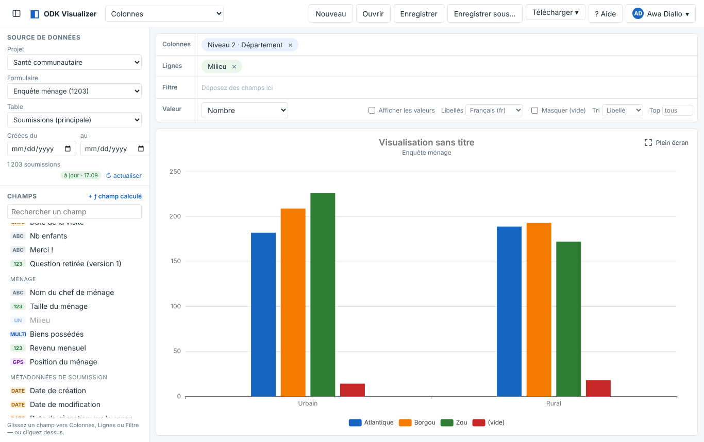
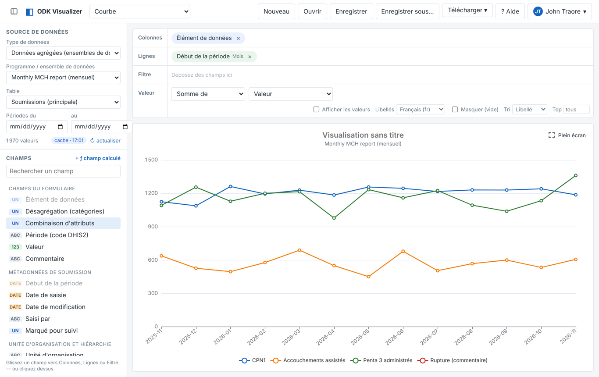
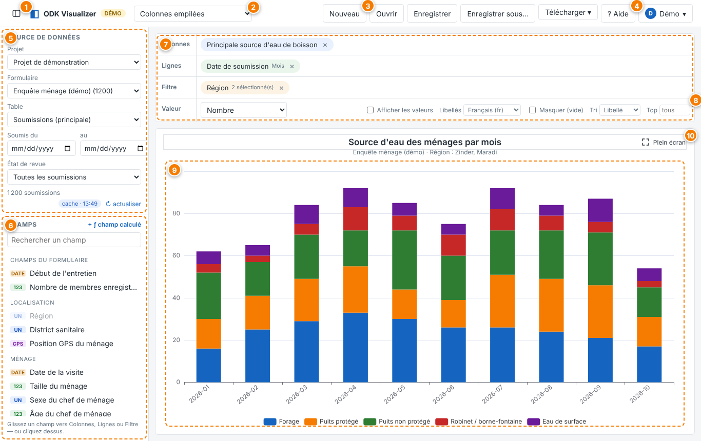
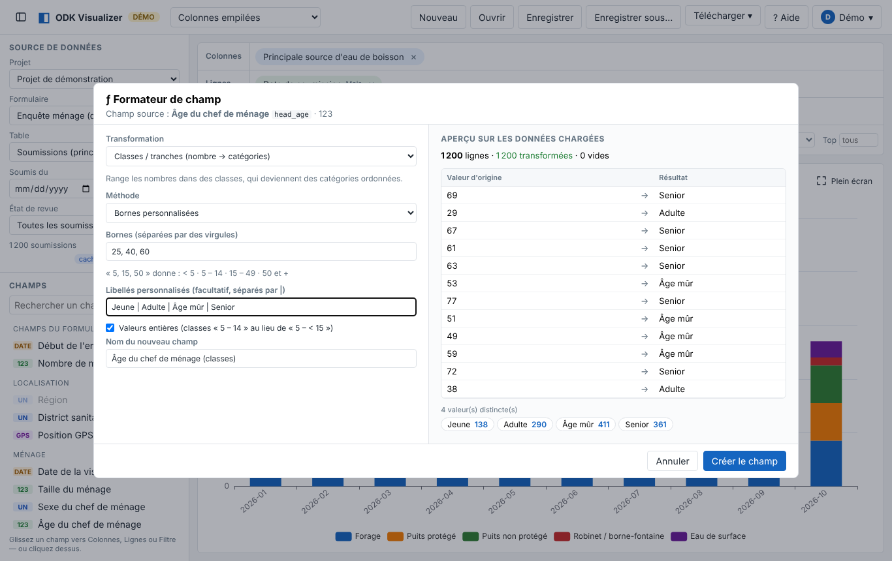

À quoi sert Data Net Visualizer ?
Data Net Visualizer transforme vos données ODK Central, IASO (Bluesquare), CommCare (Dimagi), DHIS2 et mSupply (formulaires, programmes, données agrégées, stock et distributions) en graphiques, tableaux croisés et cartes, directement dans le navigateur. Il n'y a ni export Excel ni code à écrire.
Le fonctionnement s'inspire du Data Visualizer de DHIS2 :
- vous placez des champs du formulaire en Colonnes, en Lignes ou en Filtre ;
- vous choisissez ce qu'il faut compter ou calculer (la Valeur) ;
- vous choisissez un type de graphique ;
- vous pouvez ensuite enregistrer la visualisation, la partager par un lien et la télécharger (image ou tableau).
Pour qui ?
Les gestionnaires de données, les superviseurs, les logisticiens, les coordinateurs de projet et les partenaires qui ont un compte sur ODK Central, IASO, CommCare HQ, DHIS2 ou mSupply et veulent suivre leurs résultats sans manipuler de fichiers.
Ce que l'outil ne fait pas
Il ne modifie jamais vos données ni vos formulaires sur la plateforme : il les lit seulement. Les champs calculés et les regroupements que vous créez n'existent que dans Data Net Visualizer.
Se connecter
En haut du cadre de connexion, choisissez d'abord votre plateforme : ODK Central, IASO, CommCare, DHIS2 ou mSupply. Les champs à remplir s'adaptent. Selon l'installation, une seule plateforme peut être proposée.
ODK Central
- Serveur ODK Central : l'adresse que vous utilisez pour ouvrir Central dans votre navigateur, par exemple
https://central.monorg.org. Vous pouvez coller l'adresse complète d'une page de Central : elle est nettoyée automatiquement. Sur certaines installations, ce champ est déjà rempli et ne peut pas être modifié. - E-mail et mot de passe : ceux de votre compte web ODK Central, celui qui vous sert à vous connecter à Central dans le navigateur.
- Cliquez sur Se connecter. Vous ne voyez que les projets et formulaires autorisés pour votre compte.
IASO (Bluesquare)
- Serveur IASO : l'adresse de votre tableau de bord, par exemple
https://iaso.bluesquare.org. Vous pouvez coller l'adresse d'une page du tableau de bord (…/dashboard/…) : elle est nettoyée. - Nom d'utilisateur et mot de passe : ceux de votre compte IASO. Le compte doit avoir le droit de consulter les soumissions.
Ce qu'IASO apporte en plus :
- le groupe Unité d'organisation et hiérarchie dans la liste des champs : l'unité d'organisation de chaque soumission, son type, et un champ par niveau de la pyramide (par exemple Niveau 2 · Région, Niveau 3 · District). Placez un niveau en Lignes pour obtenir les résultats par région ou par district ;
- la position de l'unité d'organisation, utilisable sur une carte même si la soumission n'a pas de point GPS ;
- la période, le statut et le statut de validation de chaque soumission.

Vous ne voyez que les soumissions des unités d'organisation autorisées pour votre compte, exactement comme dans IASO. Le filtre de dates porte sur la date de création de la soumission.
CommCare HQ (Dimagi)
- Serveur CommCare HQ :
https://www.commcarehq.orgpour la plupart des projets,https://eu.commcarehq.orgouhttps://india.commcarehq.orgpour les serveurs régionaux, ou l'adresse de votre propre serveur. - E-mail : celui de votre compte web CommCare HQ (pas un utilisateur mobile).
- Clé API ou mot de passe : une clé API est conseillée, et obligatoire si votre compte utilise la double authentification ou le SSO. Pour la créer : CommCare HQ → menu de votre compte → Paramètres du compte → Clés API.
Les projets sont vos espaces de projet CommCare ; les formulaires apparaissent sous la forme Application › Module › Formulaire, avec les libellés de la dernière version de l'application. Le compte doit avoir les droits Accès à l'API et Modifier les données (exigés par l'API de CommCare). Le filtre de dates porte sur la date de réception par le serveur ; les champs Début de saisie et Fin de saisie permettent de calculer une durée avec le formateur.
DHIS2
- Serveur DHIS2 : l'adresse de votre DHIS2, par exemple
https://dhis2.monministere.org. Si vous collez l'adresse d'une application (…/dhis-web-dashboard/), elle est nettoyée. - Nom d'utilisateur et mot de passe de votre compte DHIS2, ou un jeton d'accès personnel (
d2pat_…, DHIS2 2.38 et plus) dans le champ mot de passe : le nom d'utilisateur devient alors facultatif. Pour créer un jeton : DHIS2 → votre profil → Jetons d'accès personnels.
Le menu Type de données propose trois sources, selon ce que votre compte peut voir :
- Programmes d'événements : une ligne par événement, avec les éléments de données du programme, la date de l'événement, son statut et la position GPS.
- Programmes tracker : une ligne par inscription, avec les attributs de la personne suivie (âge, village…). Chaque étape du programme (par exemple Visite CPN, Accouchement) est une table jointe, comme les groupes répétés d'ODK : en choisissant la table d'une étape, les attributs de l'inscription restent disponibles (↑).
- Données agrégées : une ligne par valeur saisie (élément de données × désagrégation × période × unité d'organisation). Choisissez Somme de → Valeur dans Valeur, Élément de données en Colonnes et Début de la période en Lignes pour suivre un indicateur mois par mois. Sans dates choisies, les 12 derniers mois sont chargés.

Comme avec IASO, le groupe Unité d'organisation et hiérarchie donne un champ par niveau de la pyramide (Niveau 2 · Région, Niveau 3 · District…). Les libellés et les options sont affichés dans la langue de votre compte, avec les traductions de DHIS2 dans le menu Libellés. Vous ne voyez que les données de vos unités d'organisation.
mSupply
- Serveur mSupply : l'adresse de votre serveur Open mSupply (central ou site, par exemple
https://msupply.monorg.org:8000) ou du serveur web de mSupply Desktop. L'application reconnaît le type de serveur. - Nom d'utilisateur et mot de passe de votre compte mSupply.
Le menu Magasin liste les magasins de votre compte, et le menu Données propose, pour Open mSupply :
- Stock disponible : une ligne par lot, avec quantités (conditionnements et unités), valeur du stock, date de péremption et un champ Péremption prêt à l'emploi (périmé, moins de 3 mois, 3 à 6 mois…). C'est une photo du stock du moment : le filtre de dates n'existe pas ici.
- Expéditions sortantes, Réceptions, Dispensations et Ajustements d'inventaire : une ligne par transaction (statut, client ou fournisseur, dates, montant) et une table jointe Lignes (articles) avec les quantités par article. Exemple : quantités distribuées par article et par client.
- Réquisitions envoyées et reçues : quantités demandées, approuvées et fournies, consommation mensuelle moyenne, stock disponible et mois de stock par article.
Avec mSupply Desktop, l'API web est prévue pour les commandes des clients et donne moins d'informations : les factures clients confirmées pour un utilisateur mSupply (les 3 dernières années par défaut), ou le stock et les factures en cours pour un contact client.
Pour toutes les plateformes
- Votre mot de passe (ou votre clé API) est transmis uniquement à votre plateforme et n'est jamais enregistré par l'application. Pendant la session, le serveur garde en mémoire le jeton de session de la plateforme, ou vos identifiants quand la plateforme n'a pas de jeton de session (clé API CommCare, mot de passe ou jeton DHIS2).
- La session dure aussi longtemps que celle de Central (24 heures par défaut), 12 heures pour IASO, CommCare, DHIS2 et Open mSupply, 2 heures pour mSupply Desktop. Quand elle expire, l'écran de connexion réapparaît.
- Le menu à votre nom, en haut à droite, rappelle la plateforme et le serveur, et permet de changer de serveur ou de compte et de se déconnecter.
- Le bouton Essayer avec des données de démonstration ouvre une enquête fictive (1 200 ménages) pour découvrir l'outil sans compte. Il peut être désactivé par l'administrateur.
Votre premier graphique en 5 étapes
- Dans le panneau de gauche, choisissez le projet et le formulaire. Le nombre de soumissions chargées s'affiche sous les filtres.
- Dans la liste des Champs, cliquez sur un champ (par exemple Région), puis sur Ajouter aux Lignes. Vous pouvez aussi le faire glisser dans la zone Lignes. Un graphique apparaît aussitôt : le nombre de soumissions par région.
- Pour suivre l'évolution dans le temps, placez la Date de soumission en Lignes et la Région en Colonnes : faites glisser les champs d'une zone à l'autre. Cliquez sur la date placée pour choisir la période : jour, semaine, mois, trimestre ou année.
- Choisissez le type de graphique dans la liste en haut de l'écran : colonnes, courbe, tableau croisé, carte…
- Donnez un titre (cliquez sur « Visualisation sans titre »), puis Enregistrer.

L'écran en un coup d'œil
- 1Masquer / afficher le panneau latéral pour gagner de la place (touche P).
- 2Type de visualisation : 23 types classés par usage. Le signe ✦ marque ceux inspirés d'Apache Superset.
- 3Nouveau, Ouvrir, Enregistrer, Télécharger : la gestion de vos visualisations.
- 4Aide : ouvre ce guide (touche ?).
- 5Source de données : projet, formulaire, table (soumissions ou groupe répété), période, état de revue, et le bouton actualiser.
- 6Champs du formulaire, classés par groupe, avec leur type. Le bouton + ƒ champ calculé crée une formule.
- 7Mise en page : les zones Colonnes, Lignes et Filtre.
- 8Valeur et options : nombre, somme, moyenne… ; libellés, tri, top N.
- 9Le graphique, avec un titre modifiable et un rappel du formulaire, de la période et des filtres.
- 10Plein écran pour présenter le graphique en réunion (touche F).
Les étiquettes des champs
| Étiquette | Type de champ | Utilisation |
|---|---|---|
| UN | Choix unique (select_one) | Catégories : idéal en Lignes, Colonnes ou Filtre |
| MULTI | Choix multiples (select_multiple) | Chaque option cochée est comptée séparément (désactivable) |
| 123 | Nombre (entier ou décimal) | Valeur à additionner ou à moyenner ; ou catégories |
| DATE | Date, date et heure | Regroupé par jour, semaine, mois, trimestre ou année |
| ABC | Texte libre | Catégories ; nettoyable avec le formateur |
| GPS | Point GPS | Type « Carte (points GPS) » |
| ƒ | Champ transformé | Créé avec le formateur (classes, regroupements, formules…) |
| ↑ | Champ parent | Champ de la soumission parente, visible depuis un groupe répété |
Colonnes, Lignes, Filtre, Valeur
| Zone | Rôle | Exemple |
|---|---|---|
| Lignes | Les catégories principales : axe horizontal d'un graphique en colonnes, lignes d'un tableau croisé | Région |
| Colonnes | Les séries (couleurs) d'un graphique, colonnes d'un tableau croisé | Date de soumission (mois) |
| Filtre | Garder seulement certaines valeurs, sans les afficher en Lignes ou en Colonnes | Sexe = Femme |
| Valeur | Ce qui est calculé dans chaque case | Nombre de soumissions, moyenne de l'âge… |
Manipuler les champs placés
- Cliquez sur un champ placé pour choisir les valeurs à garder (avec recherche et effectifs), la période d'une date, ou le comptage des choix multiples.
- Faites-le glisser d'une zone à l'autre, ou retirez-le avec ×.
- Plusieurs champs dans une même zone se combinent : Région · Sexe.
La Valeur
Nombre compte les soumissions (ou les lignes d'un groupe répété). % du total donne leur part. Somme, Moyenne, Minimum et Maximum portent sur un champ numérique à choisir.
Les options
- Afficher les valeurs sur le graphique.
- Libellés : la langue du formulaire, ou les valeurs brutes (les codes).
- Masquer (vide) : retire les réponses manquantes.
- Tri : par libellé (ordre du formulaire) ou par valeur.
- Top : garder les N premières catégories.
- Cible : le maximum d'une jauge.
Choisir un type de graphique
La liste en haut de l'écran classe les types par usage. Quand un type demande une disposition particulière, une phrase d'explication s'affiche sous le titre du graphique.
| Je veux… | Types conseillés | Comment remplir |
|---|---|---|
| Comparer des catégories | Colonnes, Barres, Radar | Catégories en Lignes ; séries éventuelles en Colonnes |
| Classer du plus grand au plus petit | Barres (Tri : Valeur ↓), Entonnoir | Catégories en Lignes |
| Suivre une évolution | Courbe, Aires empilées, Calendrier | Date (mois, semaine…) en Lignes ; le calendrier montre chaque jour |
| Montrer la part d'un tout | Secteurs, Rose, Treemap, Sunburst, Colonnes empilées | Treemap et Sunburst : niveaux en Lignes puis en Colonnes (région → district) |
| Croiser deux variables | Tableau croisé, Carte de chaleur | Une variable en Lignes, l'autre en Colonnes |
| Voir la dispersion d'un nombre | Boîte à moustaches, Histogramme | Champ numérique en Valeur ; groupes en Lignes ou Colonnes |
| Relier deux nombres | Nuage de points | Nombre en Lignes (axe X), nombre en Valeur (axe Y), couleur en Colonnes |
| Suivre un parcours, un flux | Sankey | Au moins deux champs : chaque champ est une étape |
| Afficher un indicateur clé | Grand nombre, Grand nombre + tendance, Jauge | Aucun champ nécessaire ; la tendance compare la dernière période à la précédente |
| Localiser les enquêtes | Carte (points GPS) | Le champ GPS est trouvé automatiquement ; un champ en Colonnes colore les points |
Période et filtres
- Soumis du… au… limite les données à une période : date de soumission (ODK Central), de création (IASO, transactions mSupply) ou de réception (CommCare), date de l'événement, de l'inscription ou période des valeurs (DHIS2). Son libellé change selon la source ; il disparaît pour le stock mSupply, qui n'a pas de date. Le filtre est appliqué par la plateforme, donc moins de données sont téléchargées. Le filtre État de revue n'existe que pour ODK Central.
- État de revue : toutes les soumissions, sans les rejetées, ou seulement les approuvées.
- Filtre sur un champ : placez le champ dans Filtre et cochez les valeurs à garder. Le filtre apparaît dans le rappel sous le titre et sur les images téléchargées.
- Choix multiples : un ménage qui a coché « paludisme » et « toux » compte dans les deux catégories. Le total peut donc dépasser le nombre de ménages. Ce comportement se désactive en cliquant sur le champ placé.
Libellés et langues
- L'application lit le formulaire publié et affiche les libellés des questions et des choix, par exemple « Puits protégé » au lieu de
protected_well. - Si le formulaire a plusieurs langues (
label::Français (fr),label::English (en)…), choisissez-la avec l'option Libellés. Valeurs brutes affiche les codes. - Les catégories suivent l'ordre des choix du formulaire.
- Les listes externes (select_one_from_file) et les listes d'entités sont aussi traduites.
- Dans la liste des valeurs d'un filtre, le code apparaît en gris à côté du libellé.
Groupes répétés (repeat)
Un groupe répété (par exemple les membres d'un ménage) forme une table à part. Choisissez-la dans Table, dans le panneau de gauche : chaque ligne est alors un membre, et non plus un ménage.
- Les champs de la soumission parente restent disponibles, marqués ↑ : région, date de soumission, enquêteur… Vous pouvez ainsi faire « membres vaccinés par région ».
- Cela marche aussi pour les répétitions imbriquées : Ménage › Membres › Vaccins.
- La période et l'état de revue s'appliquent par l'intermédiaire de la soumission parente.
Formateur de champs (ƒ)
Le formateur crée de nouveaux champs à partir de ceux du formulaire, sans modifier le formulaire. Pour l'ouvrir, cliquez sur un champ, puis sur ƒ Formater / transformer…. Pour une formule, utilisez + ƒ champ calculé. Un aperçu montre des exemples avant → après, le nombre de valeurs converties et la répartition du résultat.

| Transformation | Exemple |
|---|---|
| Format d'affichage | Revenu affiché « 45,2 k FCFA » ; décimales, unité, %, séparateur de milliers |
| Classes / tranches | Âge → < 5 · 5 – 14 · 15 – 49 · 50 et + |
| Regrouper / recoder | Forage, Robinet, Puits protégé → « Eau améliorée » |
| Format du texte | « NIAMEY », « niamey » → « Niamey » ; remplacer, extraire, supprimer les accents |
| Convertir en nombre | « 1 234,5 », « 12 % », « 3000 FCFA » → nombre |
| Texte → date | « 25/12/2025 » → date ; formats JJ/MM/AAAA, MM/JJ/AAAA, Excel… |
| Partie de date | Jour de la semaine, mois, trimestre, heure… dans l'ordre du calendrier |
| Âge / durée | Âge depuis la date de naissance ; durée de l'entretien en minutes |
| Calcul (formule) | ${monthly_income} / ${hh_size} |
Formules : l'essentiel
Les champs s'écrivent ${nom}, comme dans un XLSForm.
| Écriture | Signification |
|---|---|
+ - * / ^ % | Opérations ; une division par zéro donne une valeur vide |
= != < > <= >=, and or not | Comparaisons et conditions |
if(${sexe} = "female", 1, 0) | Condition |
selected(${maladies}, "malaria") | Un choix multiple contient-il « malaria » ? |
count_selected(${maladies}) | Nombre d'options cochées |
round(x, 1), min, max, abs | Arrondi et fonctions numériques |
coalesce(${a}, 0) | Remplacer une valeur vide |
days_between(${debut}, ${fin}) | Nombre de jours entre deux dates |
concat(${a}, " - ", ${b}), & | Assembler du texte |
- Les champs transformés apparaissent dans ƒ Champs transformés et s'utilisent partout : Lignes, Colonnes, Filtre, Valeur, exports.
- Ils sont partagés avec les autres utilisateurs du formulaire. Seul leur auteur peut les modifier ; les autres en font une copie.
Enregistrer, partager, télécharger
- Enregistrer garde la mise en page, le type, les filtres, les options et le titre. Enregistrer sous… crée une copie.
- Ouvrir liste les visualisations enregistrées sur votre serveur (ODK Central, IASO, CommCare, DHIS2 ou mSupply) pour les projets auxquels vous avez accès.
- Partager : une visualisation enregistrée a une adresse propre (se terminant par
#/…). Copiez-la depuis la barre d'adresse. La personne qui l'ouvre doit se connecter au même serveur et avoir accès au projet. - Seul l'auteur peut modifier ou supprimer une visualisation. Les autres utilisateurs peuvent l'ouvrir, puis l'enregistrer sous un autre nom.
Télécharger
- Image (PNG) : le graphique, avec son titre et le rappel du formulaire, de la période et des filtres. Prêt pour un rapport.
- Tableau agrégé (CSV) : les chiffres du graphique, avec les libellés.
- Données brutes filtrées (CSV) : une ligne par soumission, avec les codes et une ligne de libellés de questions.
Plein écran, panneau latéral et raccourcis
- Plein écran : le bouton en haut à droite du graphique, ou la touche F. Idéal pour une réunion ou un vidéoprojecteur. Le titre et les filtres restent affichés. Pour quitter : Échap ou le bouton Quitter.
- Panneau latéral : le bouton tout à gauche de la barre du haut, ou la touche P. Le graphique prend toute la largeur. Votre choix est mémorisé sur cet appareil.
| Touche | Action |
|---|---|
| F | Plein écran du graphique (activer / quitter) |
| P | Masquer / afficher le panneau latéral |
| Échap | Quitter le plein écran, fermer une fenêtre |
| ? | Ouvrir ce guide |
| Maj + clic sur « actualiser » | Tout recharger depuis la plateforme |
Les raccourcis ne s'activent pas pendant que vous écrivez dans un champ de texte.
Données à jour et cache
Pour aller vite, même avec des dizaines de milliers de soumissions, le serveur de l'application garde une copie des données téléchargées. C'est le cache. L'étiquette sous les filtres indique l'état :
| Étiquette | Signification |
|---|---|
| à jour | Les données viennent d'être vérifiées auprès de la plateforme |
| cache | Copie récente (moins de quelques minutes), affichée immédiatement |
| mise à jour… | Copie affichée tout de suite ; la mise à jour se fait en arrière-plan et le graphique se rafraîchit tout seul |
- ↻ actualiser ne télécharge que les soumissions nouvelles ou modifiées : c'est rapide. Maj + clic recharge tout.
- Le premier chargement d'un très gros formulaire peut prendre une minute. Les suivants sont rapides.
- Le menu à votre nom → Cache des données montre ce qui est en mémoire et permet de le vider.
- Avec ODK Central, le cache d'un formulaire est partagé entre les utilisateurs du même serveur, après vérification des droits de chacun. Avec IASO, CommCare, DHIS2 et mSupply, il est propre à chaque compte, car ces plateformes limitent les données visibles selon l'utilisateur (unités d'organisation, lieux, magasins).
Questions fréquentes
Je ne vois pas mon projet ou mon formulaire
L'application montre exactement ce que votre compte peut voir. ODK Central : demandez à l'administrateur de vous donner un rôle sur ce projet (Lecteur de projet suffit) et vérifiez que le formulaire est publié : les brouillons n'apparaissent pas. IASO : le formulaire doit être rattaché au projet et votre compte doit avoir le droit « Soumissions ». CommCare : seuls les formulaires de la dernière version des applications sont listés ; une application supprimée n'apparaît plus.
IASO : je vois moins de soumissions que mon collègue
C'est normal si vos comptes sont rattachés à des unités d'organisation différentes : IASO limite les soumissions visibles selon l'utilisateur, et l'application respecte cette limite (le cache est propre à chaque compte).
CommCare : « Identifiant ou clé API incorrects »
Vérifiez que vous utilisez l'e-mail de votre compte web CommCare HQ et une clé API valide (elles peuvent expirer ou être limitées à un projet). Avec la double authentification ou le SSO, le mot de passe ne fonctionne pas : il faut une clé API. Vérifiez aussi le serveur (www, eu ou india).
CommCare : « pas accès à ces données »
L'API de CommCare exige les droits Accès à l'API et Modifier les données sur le projet. Demandez-les à l'administrateur du projet CommCare.
DHIS2 : la connexion est refusée
Vérifiez l'adresse (sans /dhis-web-…), le nom d'utilisateur et le mot de passe : après plusieurs échecs, DHIS2 verrouille le compte quelques minutes. Si votre DHIS2 utilise une connexion unique (OpenID), créez un jeton d'accès personnel et collez-le dans le champ mot de passe. Un jeton peut être limité à certaines adresses IP : celle du serveur d'ODK Visualizer doit y figurer.
DHIS2 : les données agrégées sont longues à charger
Elles sont téléchargées valeur par valeur pour toutes vos unités d'organisation. Choisissez une période plus courte avec les dates : sans dates, les 12 derniers mois sont chargés.
mSupply : « ne répond ni comme Open mSupply ni comme mSupply Desktop »
L'adresse doit être celle du serveur, avec son port s'il y en a un (par exemple :8000 pour Open mSupply), sans /graphql ni chemin de page. Pour mSupply Desktop, le serveur web doit être activé.
mSupply : une modification n'apparaît pas encore
Les modifications d'une transaction qui ne changent pas son statut sont prises en compte au rechargement complet (au moins toutes les heures). Pour les voir tout de suite : Maj + clic sur ↻ actualiser.
« E-mail ou mot de passe incorrect » alors que j'utilise ODK Collect sans problème
ODK Collect utilise un utilisateur mobile (QR code), qui ne peut pas se connecter ici. Il vous faut un compte web ODK Central, celui qui sert à ouvrir Central dans un navigateur.
Le graphique affiche « Aucune donnée pour cette sélection »
Vérifiez la période (Soumis du… au…), l'état de revue et les valeurs cochées dans les champs placés en Filtre. Un filtre trop strict peut tout exclure.
Je vois des codes (protected_well) au lieu des libellés
Vérifiez que l'option Libellés n'est pas sur « Valeurs brutes ». Si le problème persiste, les libellés n'ont pas pu être lus pour ce formulaire, ou la valeur vient d'une ancienne version du formulaire qui n'existe plus dans la liste de choix.
Mes chiffres sont différents de ceux de la plateforme
Plusieurs causes possibles :
- Les données datent de quelques minutes : cliquez sur actualiser.
- Les choix multiples comptent chaque option cochée.
- Sur une table répétée, on compte des lignes et non des soumissions.
- Les filtres de période et d'état de revue sont actifs.
- IASO et CommCare n'envoient pas les soumissions supprimées ou archivées.
Je ne peux pas modifier une visualisation ou un champ transformé
Seul son auteur peut le modifier. Utilisez Enregistrer sous… pour en faire votre propre copie. Pour un champ transformé, l'enregistrement propose de créer une copie.
Le premier affichage d'un formulaire est lent
C'est normal pour un gros formulaire : toutes les soumissions sont téléchargées une première fois. Ensuite, seules les nouveautés le sont, et les autres utilisateurs profitent de la même copie.
On me demande de me reconnecter
Votre session a expiré (24 heures par défaut avec ODK Central, 12 heures avec IASO et CommCare), votre clé API a été révoquée, ou l'application a été redémarrée. Reconnectez-vous : vos visualisations enregistrées sont conservées.
Glossaire
| Terme | Définition | Équivalent DHIS2 |
|---|---|---|
| Soumission | Un formulaire rempli et envoyé à la plateforme (ODK Central, IASO, CommCare) ; pour DHIS2 et mSupply, une ligne de la table principale (événement, inscription, valeur, lot, transaction) | Événement |
| Champ | Une question du formulaire, ou un champ transformé | Élément de données |
| Choix | Une réponse possible d'une question à choix | Option |
| Groupe répété | Partie du formulaire remplie plusieurs fois (membres, visites…) | Section répétable |
| Champ parent (↑) | Champ de la soumission à laquelle appartient une répétition | — |
| Période | Regroupement des dates : jour, semaine, mois, trimestre, année | Période |
| Champ de lieu | Région, district, formation sanitaire… placés en Lignes ou en Filtre | Unité d'organisation |
| Unité d'organisation (IASO) | Lieu auquel une soumission IASO est rattachée, avec ses niveaux de pyramide (pays, région, district…) | Unité d'organisation |
| Espace de projet (CommCare) | Le « projet » CommCare HQ, qui contient les applications et leurs formulaires | — |
| Clé API (CommCare) | Code secret à créer dans CommCare HQ, à utiliser à la place du mot de passe | Jeton d'accès personnel |
| Inscription (DHIS2 tracker) | Une personne suivie dans un programme, avec ses attributs ; ses événements sont dans les tables des étapes | Enrollment |
| Lot (mSupply) | Une ligne de stock : un article, un numéro de lot, une date de péremption et une taille de conditionnement | — |
| Visualisation enregistrée | Mise en page, filtres et type gardés sous un nom | Favori |
| Libellé | Texte affiché d'une question ou d'un choix, dans une langue du formulaire | Nom |
| Cache | Copie des données gardée par le serveur pour aller plus vite | Tables d'analyse |